2026-10-15 · 사례 01 · R01 R02 R03 R04 R05
후속 피드백을 반영해 사각 얼음을 끝이 뾰족한 결정으로 바꾸고 벽과 바닥 충돌에 딸기색 흔적을 추가했다. 무선 선풍기를 아이스크림으로 교체했다. 좌클릭으로 던져 직접 맞히면 상대가 1초 동안 얼어 이동과 행동 및 점령을 할 수 없다. 현재 탐색 테스트는 2번 아이스크림을 선택해 시작한다.
초기 외형은 Cube 기반이라 얼음이 네모나게 보였다. 비플레이어 표면 충돌은 시각 흔적 없이 종료되었다. 사용자는 뾰족한 얼음과 벽·바닥 흔적을 추가 요청했다. 초기 요청에서는 사용자는 기존 선풍기 자리에 투척형 아이스크림을 요청했다. 이전 선풍기는 목록과 모델 및 기본 밀기 로직이 있었지만 사용 효과는 보류되어 있었다. 이번 변경은 결함 수정이 아니라 새 아이템으로의 요구 변경이다. 수정 전 화면은 별도로 촬영하지 않았으며 이전 상태는 코드와 기존 문서로 확인했다.
중심 다면체와 주변 12개 결정은 양 끝이 뾰족한 육각 메시 하나를 공유한다. 표면 흔적은 기존 SurfaceInkMark에 색상과 유지·페이드 시간만 선택 인자로 추가해 재사용했다. 기존 만년필의 기본 검정색과 1초 유지 및 1초 페이드는 유지한다. 아이템 ID5를 유지한 채 IceCream으로 교체하고 택배 획득과 HUD 및 재생성 빌더를 연결했다. 기존 Rigidbody와 BrawlShot의 고속 이동 스윕 및 첫 충돌 1회 처리를 재사용했다. 딸기와 바닐라 콘 모델은 Unity 네이티브 메시와 재질로 만들고 같은 모델을 슬롯 아이콘으로 렌더했다.
적중은 DeliveryItemHit(stunSeconds:1) → ApplyItemHit → ReceiveHit 공통 경로를 사용한다. Applied 결과에서만 빙결 표시 시간을 기록하므로 에어캡은 한 번 막고 터지며 면역 중에는 보호막을 소비하지 않는다. 기절 종료 뒤 2초 면역을 공유한다. 빙결 중 점령 진행을 초기화하고 아이템 사용과 이동을 막으며 로봇 Animator를 잠시 멈춘다.
상대의 떠 있는 몸통을 투명한 푸른 육각 다면체와 뾰족한 결정이 감싼다. 본인은 화면 가장자리의 서리와 빙결 남은 시간을 본다. 빙결 동안 뿅망치의 노란 기절 고리는 숨긴다. 효과는 1초 후 사라지고 애니메이션과 행동이 복구된다. 표시용 얼음에는 충돌체를 추가하지 않았다.
검사는 Unity 6000.5.10f1의 SampleScene 로컬 Play Mode에서 2026-10-15 실행했다. 검증 도구는 격리 위치에서 실제 물리 비행을 실행하며, 아래 화면은 실제 맵에 검수 상태를 설정한 재현 캡처다. 정지 화면으로 1초 정확도를 주장하지 않으며 시간 해제는 별도 검사 로그로 확인했다. 온라인 동기화와 봇의 아이스크림 자동 사용은 이번 범위에 포함하지 않는다.
이번 후속 아이스크림 50개와 만년필 표면 회귀 26개는 통과했다. 화면 서리가 사각형으로 보이던 보간 계산도 보정해 뾰족한 끝이 나타나도록 한 뒤 재검사·재촬영했다. 아래는 첫 구현 때의 검수 이력이다. 초기 아이스크림 32개 검사는 통과했다. 첫 캡처는 검수 중 비활성화한 HUD와 남아 있던 보호막 표시 때문에 부적절하여 HUD를 켜고 보호막 상태를 갱신한 뒤 재촬영했다. 뿅망치 회귀 검사는 처음에 애니메이션 포즈 확인 시점 지연으로 실패했다. 타격 판정은 실제 시간 흐름으로 확인하고 시각 포즈만 타격 후 0.19초로 고정해 재검사한 결과 36개가 통과했다.
재컴파일 오류는 없었다. 기존 Unity 구형 검색 API의 경고는 기능 오류와 구분해 기록했다. 앞선 뿅망치 36개와 택배 48개 통과는 첫 구현 때의 기록이며 이번 후속 검사는 아이스크림 50개와 만년필 표면 26개다. 검사군 수는 고유 사례 수로 합산하지 않는다.
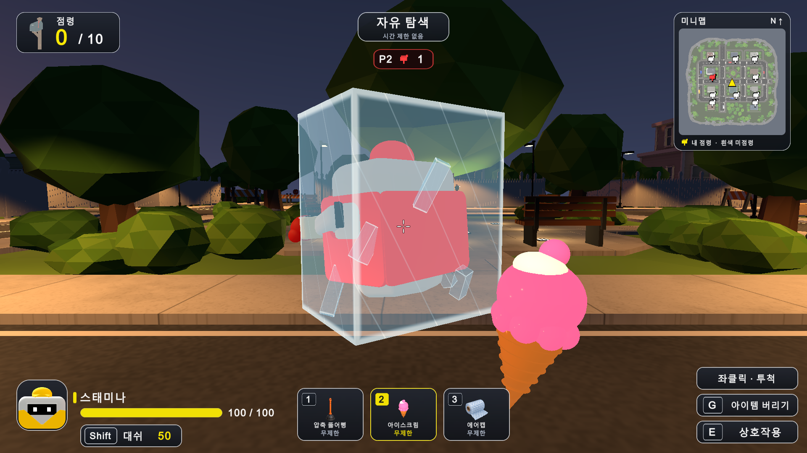
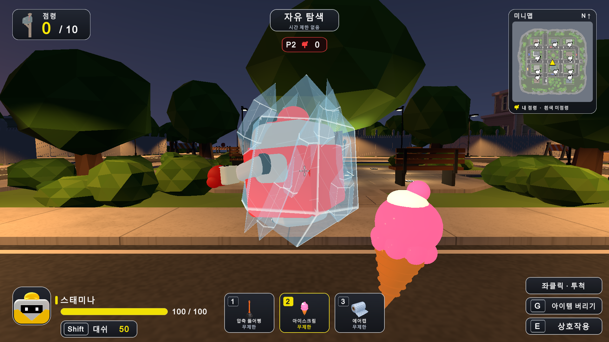
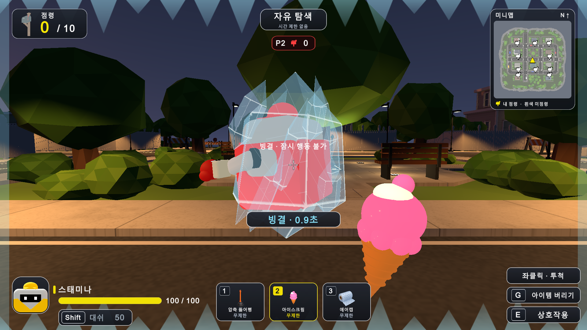
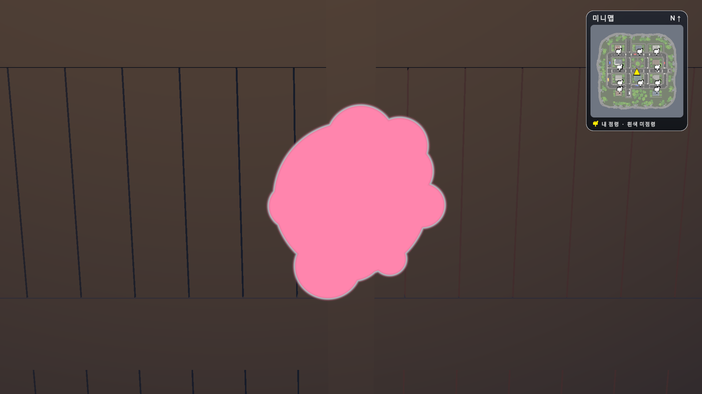
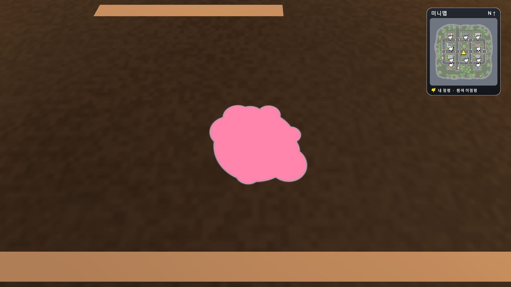
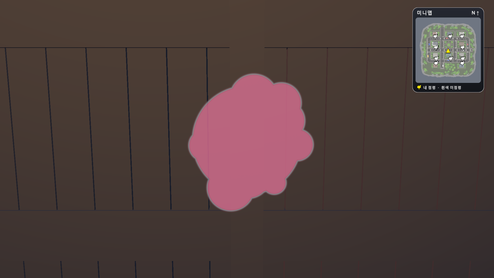
기존 섬 맵과 아이템을 재사용해 1대1 2명 및 2대2 4명 방을 추가했다. 메인 메뉴에서 경기 방식을 고르면 정원이 모인 뒤 3초 후 시작한다. 옷색은 방장이 중복 없이 무작위로 배정하며 선택 화면은 없다. Windows 개발 빌드의 실제 EXE 2개와 4개를 각각 연결해 경기와 결과 동기화를 확인했다.
기존 SampleScene은 1인 탐색과 NPC 시연 중심이었다. 참가자를 연결하는 세션, 팀 점수 및 경기 전후 화면이 없었다. 요청에 따라 처음 2대2를 연결한 뒤 1대1 모드와 Windows 패키징을 추가했다. 과거 4인 개인전의 30초 인원 축소 제안은 이번 2대2와 1대1에 자동 적용하지 않았다.
NGO 2.13.3과 Unity Transport를 사용한다. 호스트가 참가 슬롯·팀·옷색·이동·공격·획득·점령 및 종료를 판정하고, 클라이언트는 입력을 전송한다. 20Hz 스냅샷은 캐릭터 위치와 아이템·상태·투사체·우체통·택배·시간·결과를 전달한다. 기존 부유 이동, CharacterController 충돌, 공통 피격/에어캡 방어와 아이템 이펙트를 재사용했다. 옷색과 팀 색을 구분해 우체통은 A 파랑/B 주황, 캐릭터는 개별 색과 이름 위 팀 표시를 쓴다.
2026-10-15 Unity 6000.5.10f1 SampleScene에서 에디터 호스트+실행 파일을 검수하고, 최종 배포 폴더의 동일 EXE들로 재검증했다. 1대1 호스트 13개/클라이언트 3개, 2대2 호스트 14개/각 클라이언트 3개 통과. 재경기 대기방 복귀·연결 정리·방 재개설·메뉴 복귀 4개도 별도로 통과했다. 중복된 검사군이므로 합계를 고유 사례 수로 쓰지 않는다. 화면은 실제 네트워크 세션 캡처이며, 자동 검증은 입력을 주입하고 점령 시간을 앞당기며 경기 종료도 약 8초 후 강제로 진행했다. 일반 플레이 제한 시간은 180초다.
첫 NGO 2.7.0은 Unity 6000.5 EntityId API와 호환되지 않아 컴파일에 실패했다. 2.13.3으로 교체 후 컴파일을 통과했다. 첫 에디터 검증은 일시정지 상태에서 접속이 진행되지 않아 시간 초과했으며 실패 자료를 보존했다. 재생 상태를 복원한 실제 프로세스 시험은 통과했다. 첫 샌드박스 내 EXE 실행은 시작하지 못해 로그가 없었고, 승인된 숨김 프로세스 실행으로 전환했다. 자동 승인 사용량 한도로 한 번의 재생 종료 호출이 미실행됐지만 이후 Editor가 idle임을 확인하고 정상 도구 호출로 계속했다.
Windows x64 Mono Development Build, LZ4 압축, 기본 창 1280×720 및 크기 조절 가능. 최종 Build Succeeded, 약 263.31MB, 23.34초. 빌드 보고에는 기존 com.unity.pipeline의 CodeAnalysis Unsafe DLL 경로 예외 1개, 미컴파일 후처리 안내와 기존 Minimap 검색 API 경고 2개가 기록됐다. 이를 무오류 빌드로 표현하지 않는다. 새 게임 스크립트 컴파일과 최종 EXE의 두 모드 실제 실행은 통과했다.
현재는 같은 PC 또는 같은 LAN의 직접 IPv4 개발 방이다. MD 방 코드는 IP와 UDP 포트 7777을 인코딩한 주소이며 공개 서버 검색이나 Relay 코드는 아니다. 외부 인터넷 매칭·Relay/NAT 우회·계정·호스트 이전은 미구현이며 다른 물리 PC/LAN과 WAN 품질은 이번에 실측하지 않았다. 20Hz 위치 보정은 예측/보간 없이 적용하므로 지연이 큰 환경에서는 움직임이 거칠 수 있다. 9종 사용 경로는 연결했으며 이번 네트워크 실측 공격은 아이스크림/에어캡 공통 피격 중심이다. 기존 아이템별 로컬 검수 이력과 구분한다.
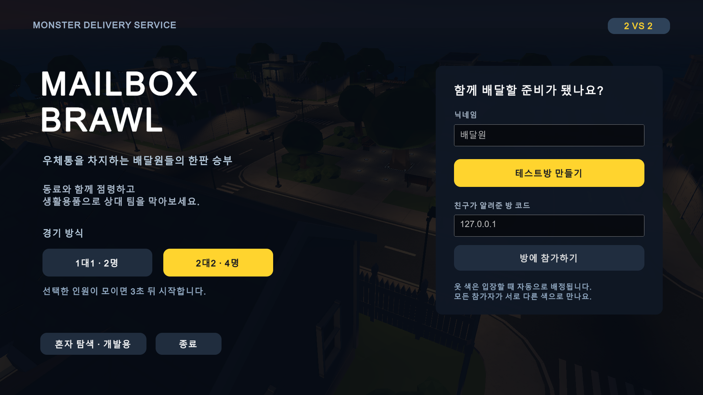
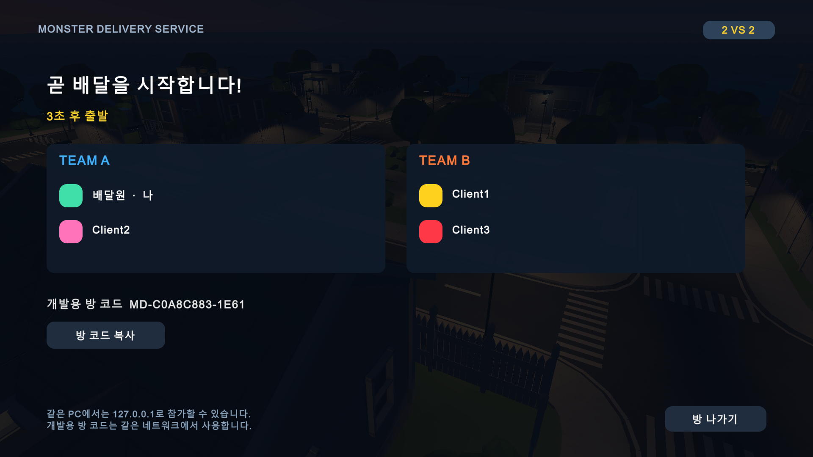
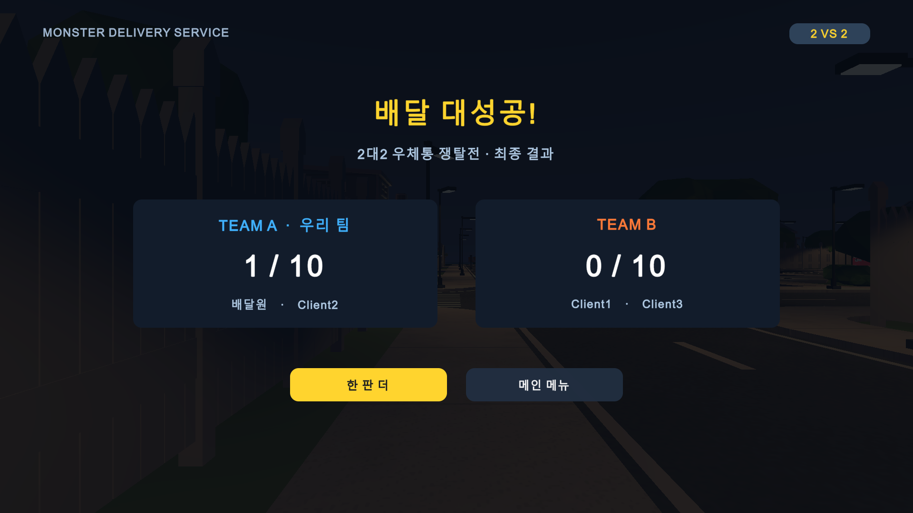
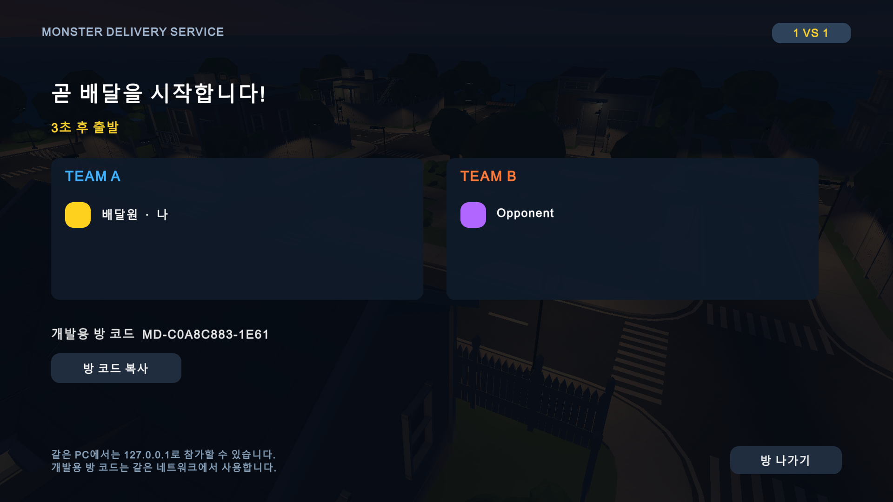
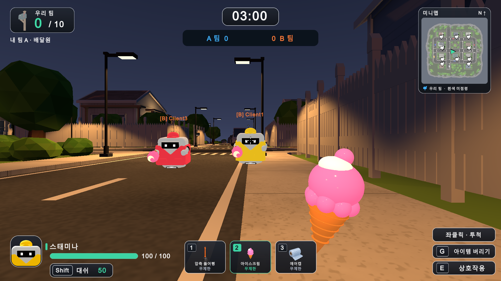
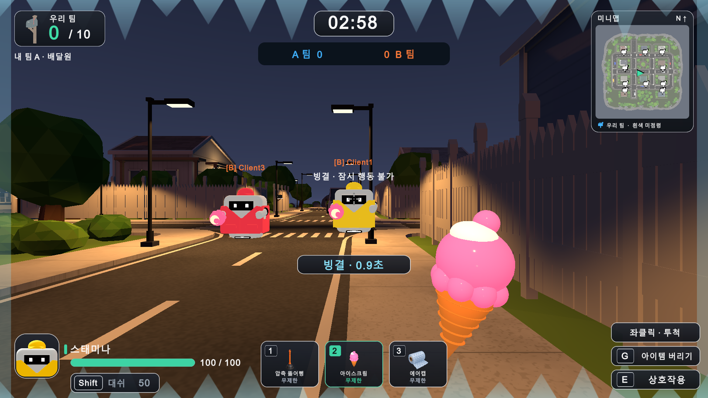